来源：https://b121w2zgwyx.feishu.cn/docx/ZRROd7bhBoYoYUxlUbOcAYMBnRh
前段时间分别做了公众号的自动发布，小绿书的一键生成，还有小红书自动转换小绿书等一系列的工作流和脚本。
在大家使用和部署过程中还是发现了许多问题：
首先，工具使用不统一，感觉乱乱的。
其次，没有coze基础的，迁移照搬我的工作流，还是挺困难的。
最后，有ip隔离需求的，之前的方案都不太适用。
另外，大家希望文章可以自动排版
于是，我一拍脑袋，爆肝了一周，我把之前所有的工具全部给统一了。经过改进后，目前的方案可以实现：
1、根据主题自动生成文章
2、支持自定义提示词生成文章内容。
3、根据主题题自动生成小绿书（金句类型）
4、自动提取关键词生成配图
5、自动对文章进行排版
6、自动发布（同时支持图文类型和小绿书类型的发布）
7、同时兼容之前的爬取小红色内容转换为小绿书的脚本
来看一下我的操作演示吧
接下来，我们来详细介绍一下这套脚本的部署和使用
1、在飞书的选题表格中，提前设置好你要发布的主题。
2、通过RPA脚本触发coze工作流，coze工作流会拉取选题进行批量的生成文章和配图。
3、通过rpa触发公众号的发布，rpa会拉取飞书中生成好的文章内容，进行排版和发布。
请看 ，飞书这个配置要仔细看，没做好，工具无法使用
https://www.bitbrowser.cn/ 没什么特别说明的，直接安装就是了
点击系统配置=》找到文件下载目录配置 改成你想要的目录
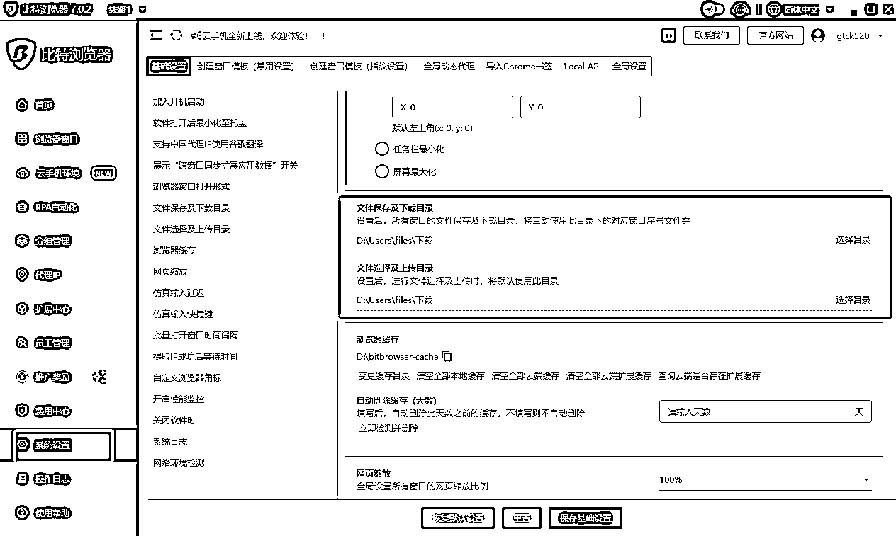
这个目录是后面下载图片时要用到的。
需要导入的脚本为3个
分别下载以上三个脚本到本地。
然后, 打开比特浏览器=》 点击 “RPA自动化” =》进入流程设计
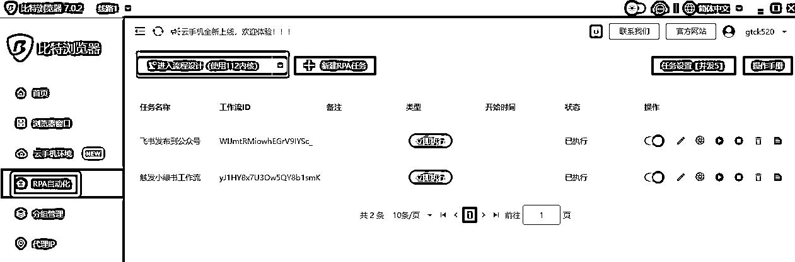
浏览器会初始化，并打开一个用于调试的RPA窗口，以及自带安装好的Automa 插件。
打开automa窗口，进入工作流页面=》点击下拉标志=》点击导入工作流，将前面下载的工作流导入
我们的脚本使用了一个叫做墨滴的markdown排版工具，AI生成的内容会自动生成markdown格式。我们通过这个工具进行转换排版，并发布公众号。
https://www.mdnice.com/ 没有账号的去注册一个；
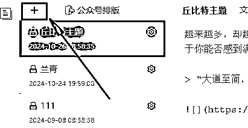
标题随便输入就行了
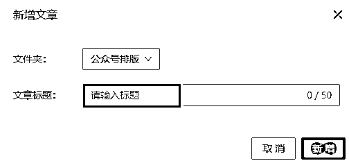
在内容中，随便输入一些内容，如图：
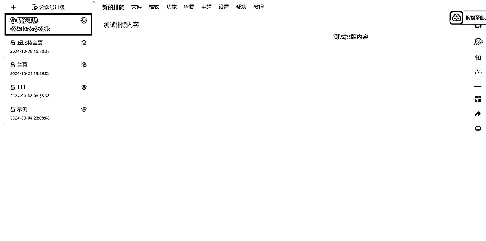
接着我们选择一个我们喜欢的主题，后续文章就会使用这个主题排版
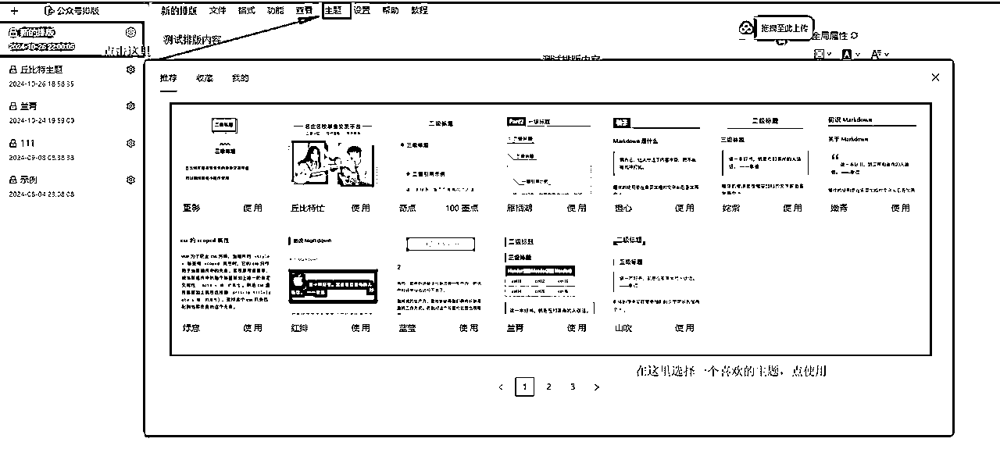
④、保存一下当前文章的链接地址
接下来我们保存一下，然后将这个文章地址复制下来，后续要配置到脚本当中，复制完就可以关闭了。
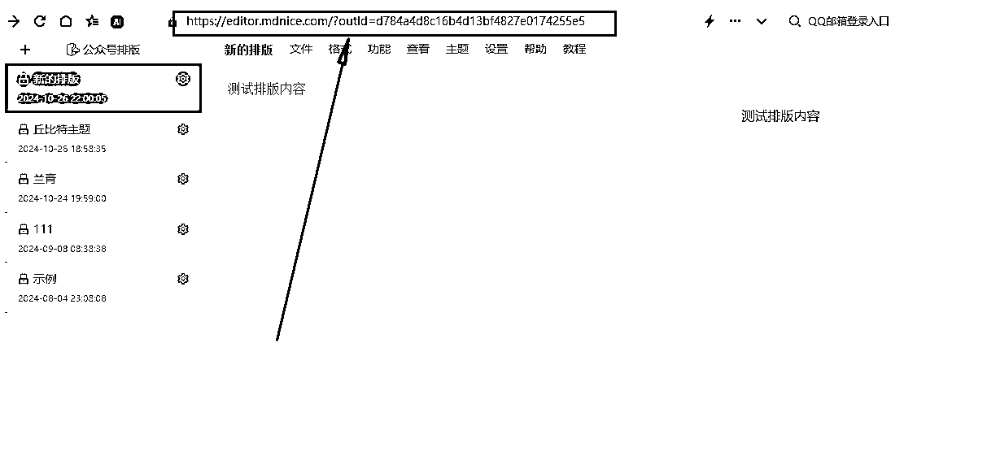
进入我的飞书表格
创建一下副本
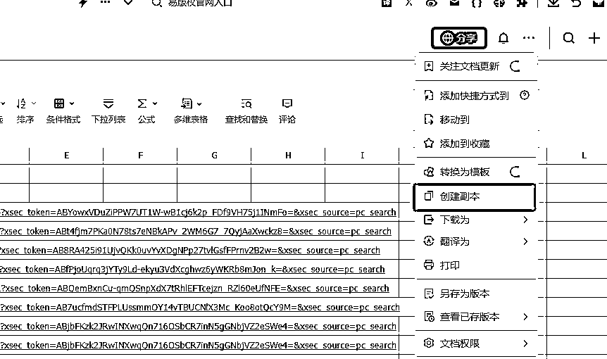
然后获取飞书表格链接，注意了，每个表单点击一下，链接都不一样的，后面的配置会用到，一定要对应正确的表格链接
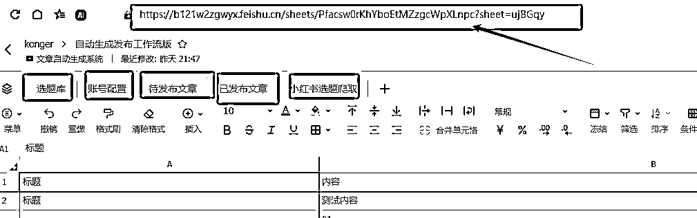
接下来，我们开始进行脚本的基本配置，每个脚本都要配置哦。我们首先打开比特浏览器=》 点击 “RPA自动化” =》进入流程设计。
然后进入工作流页面找到我们的刚刚导入的脚本，点击进入脚本编辑页面。找到触发器的后面一个节点叫做“插入数据”，我们双击“插入数据”，然后点击左边的 “insert data”按钮；
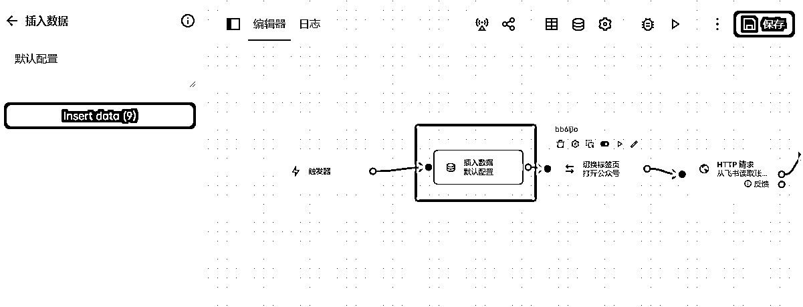
我们会看到这个配置页面，我们把这里里面的值，全部替换成我们自己的值就行了。切记变量名不要去修改，否则会出错
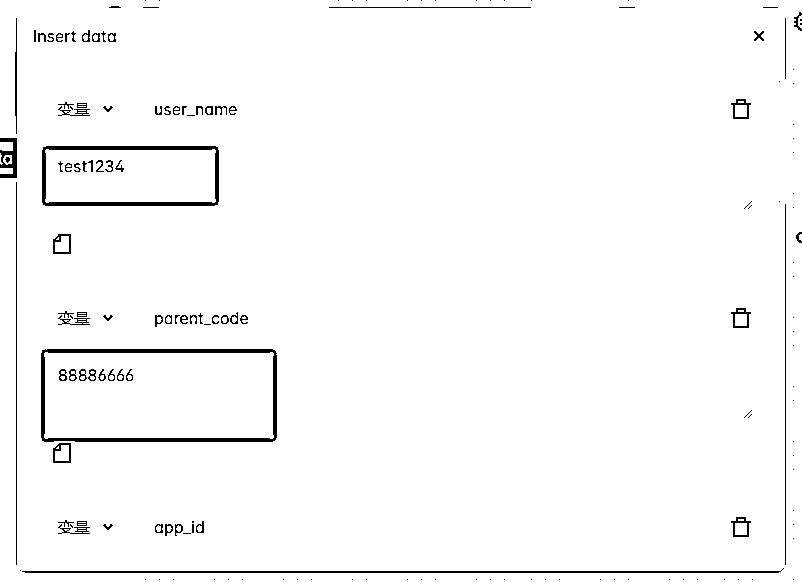
字段对应如下，配置的时候注意对应清楚，不是每个脚本都要这么多配置，找到对应填写就行了；
| app_id | 填你前面飞书得到的app_id; |
|---|---|
| app_secret | 填你前面飞书得到的app_secret ; |
| daifabu_sheet_url | 填你的飞书待发布表单的url（前面有说明过了） |
| yifabu_sheet_url | 填你的飞书已发布表单的url |
| zhanhao_sheet_url | 填你的飞书账号配置表单的url |
| sheet_url,xhs_sheet_url | 填你的飞书的小红书爬取表单的url |
| save_draft | 这个填1 代表发布到草稿箱，填0代表直接发布（待测试完善） |
| download_path | 这个填前面第2步，比特浏览器的下载目录就行了 |
| is_bite | 如果是其他浏览器或者在比特浏览器rpa调试时这里设置为0； 如果是正式绑定到窗口使用时，记得设置为1； |
| markdown_theme | 排版主题文章链接，这里填写第3步墨滴排版配置好的地址 |
| user_name | 账号用户名（请查看最后的账号领取） |
| parent_code | 上级邀请码（请查看最后的账号领取） |
每个脚本都有插入数据配置项，记得修改！！
每个脚本配置完成之后，请先点保存，再运行调试。调试没问题之后，再进行下一个脚本。
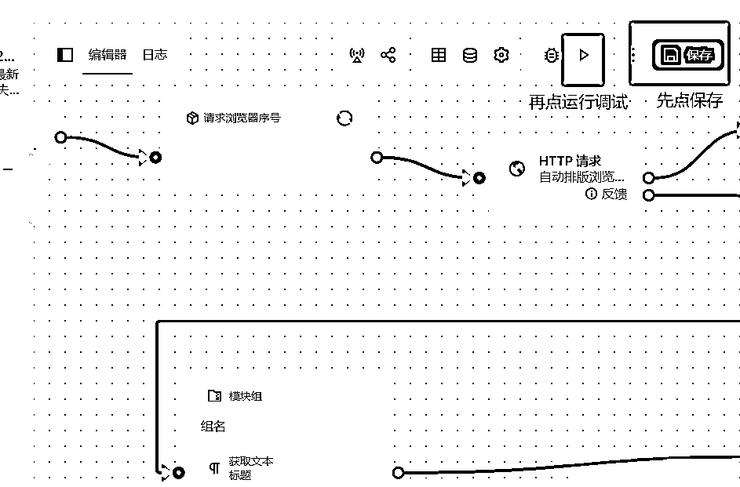
如何看有没有问题？
点击运行之后请点击这个日志
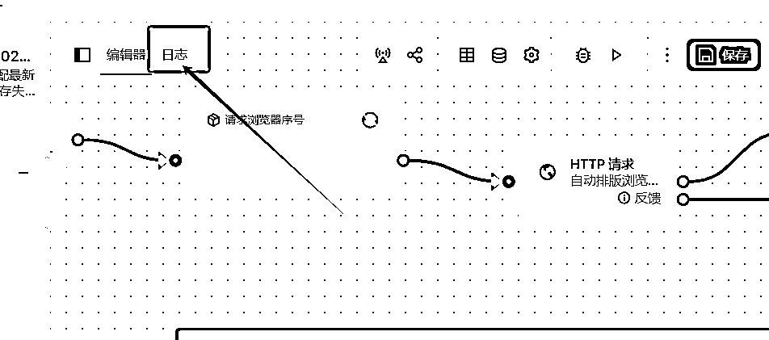
脚本运行失败一般都会出现如下报错：
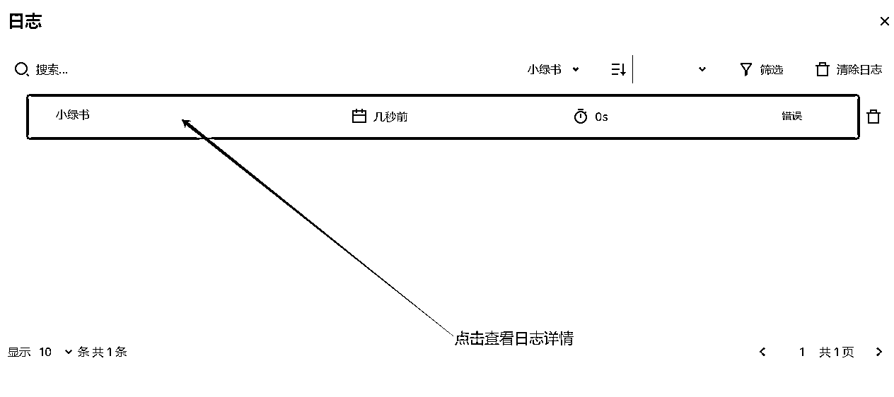
请根据报错问题调整，实在不会调整，请点开详情，找到红色的报错的位置，把具体信息反馈到交流群，如：
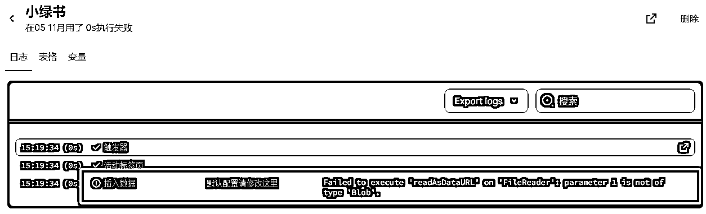
上面的配置完，其实直接运行就可以用了。不过为了实现多账号，以及定时执行，我们还需要将rpa脚本绑定到浏览器的窗口中。
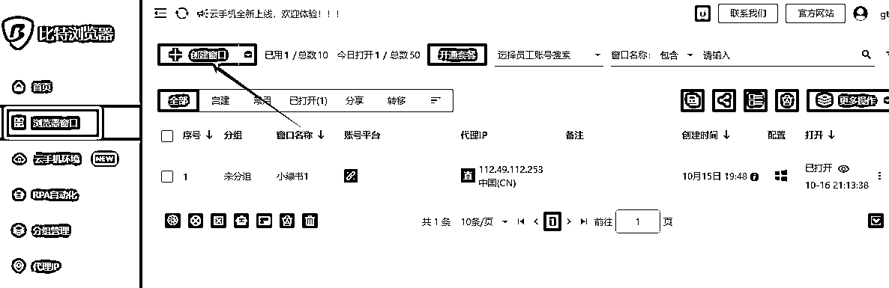
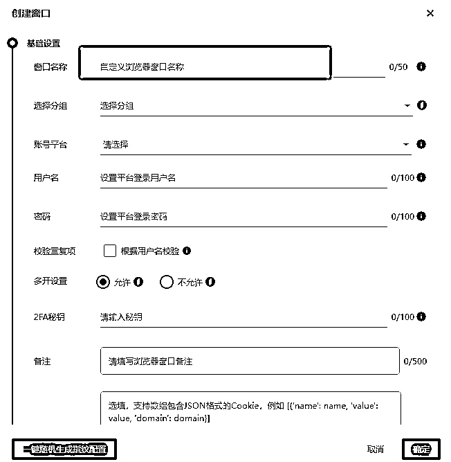
创建成功的话，这里会出现你命名的窗口
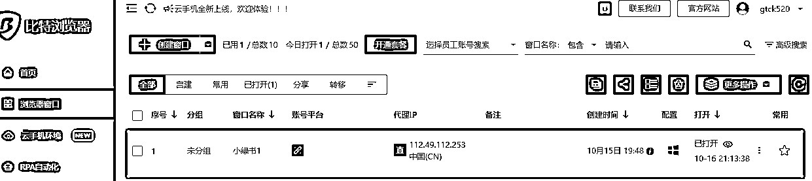
这里的窗口，你们就理解成一台小电脑吧，他只运行了一个浏览器。 但是每个窗口可以有不同的ip地址，这样你如果有不同的账号，就能模拟出不同电脑登录的效果了。
因此，你要做几个账号，就创建几个窗口，然后将不同的微信在不同的窗口里面登录就行了。
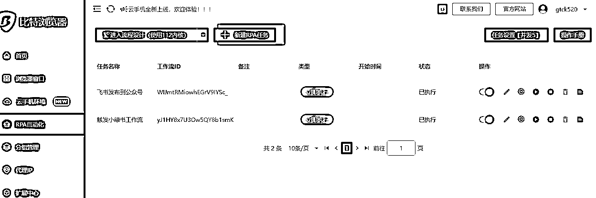
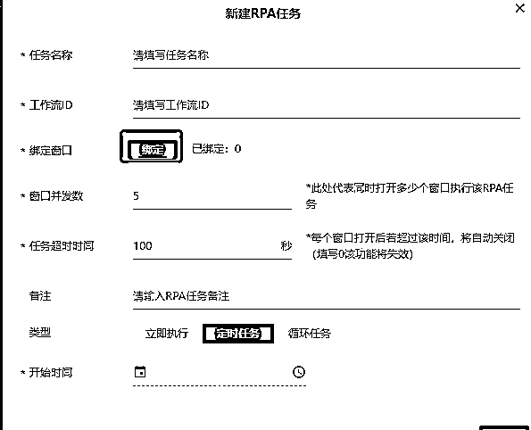
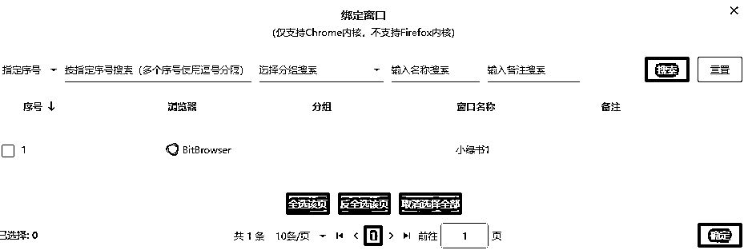
脚本就绑定好了，其他脚本一样的操作，不过要注意，采集小红书的脚本，运行前有个输入参数要填，如果绑定到窗口执行会不方便。建议暂时不要绑定。除非你知道怎么优化脚本。
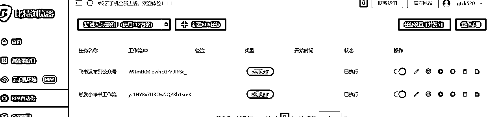
以上绑定脚本时，有个工作流id是从这里复制的：
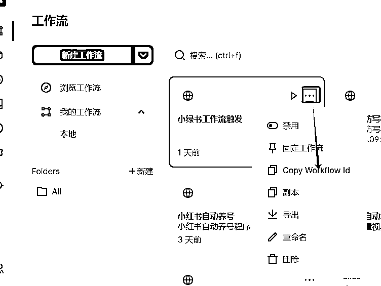
绑定到默认的窗口后，“从飞书发布到小绿书”和“飞书发布到公众号”这两个脚本里面，有个保存资源的控件，默认没有写入下载目录的权限，我们要去修改一下。
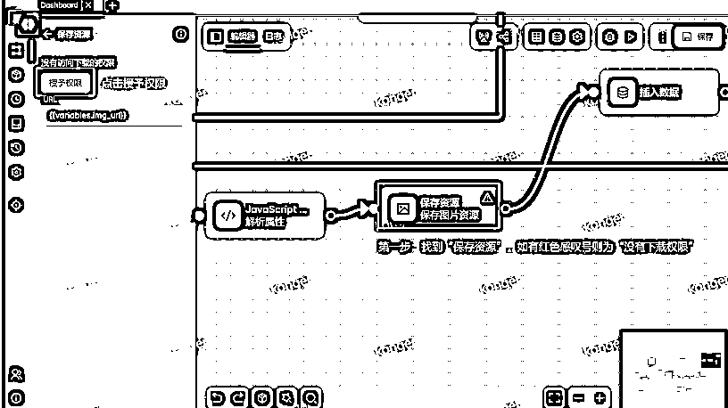
另外发布到公众号的脚本，有两个剪切板的节点，同样的需要授予一下权限
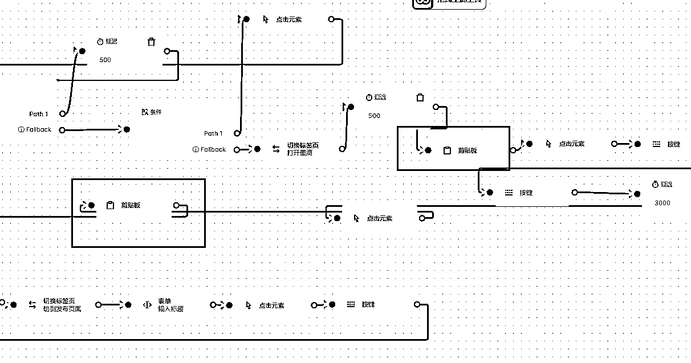
到这里脚本就准备好了。
模版表格的标题，不要改动，否则会导致内容识别失败
我的飞书模板总共有用的表单为以下五个：
选题库是用来存放需要发布的主题的，大家主要需要配置的就是这里，需要生成什么内容就往这里加。（后期，还会增加，自动爬取热点到选题，真正实现，连选题都不需要自己录入）
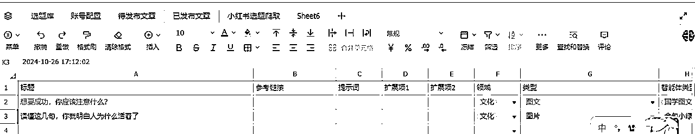
| 标题 | 就是你需要生成的标题 |
|---|---|
| 参考链接 | 添入需要仿写的文章链接（目前测试是支持公众号的文章链接的），如果直接填入文章内容而不是链接的话，将会进行风格仿写（如果用是用智能体来写，这里必须为空，因为填了内容，系统就认为需要仿写） |
| 领域 | 就是账号的运行领域，是必填的，只有当领域跟 账号的对应，内容才会发到该账号中 |
| 类型 | 文章的类型，图文：就是公众号的文章；图片：就是小绿书形式的内容； |
| 智能体类型 | 就是这个主题，你需要生成什么类型的内容，目前支持的类型 小绿书形式的：金句小绿书题材； |
| 是否可直接发布 | 待开发 |
| 是否需要生成 | 默认否，选是的话 每次都生成 |
| 最后一次生成时间 | 有生成时间，说明标题生成过，后续不会再生成。如果你需要再生成，可以把时间删除，也可以把上面的设置成“是” |
| 提示词 | 当智能体类型，选择为“自定义” 时必须要填，将会使用提示词里设置的提示词进行内容生成 |
| 扩展项1 | 当智能体类型，选择为“自定义” 时必须要填，用于控制配图的生成模型 可选项：通用、人像 |
| 扩展项2 | 当智能体类型，选择为“自定义” 时必须要填，用于控制配图的个数，填数字 |
账号配置用来控制发布的账号配置
| 账号ID | 必填项，填数字，每个账号id需要不一样，用于过滤已发布文章 |
|---|---|
| 账号名称 | 必填项，公众号就是公众号名称，rpa脚本发布时，会根据账号名称跟窗口里的账号进行匹配，匹配成功才会发布 |
| app_id | 之前工作流发布需要配置，最新这个脚本不需要 |
| app_secret | 之前工作流发布需要配置，最新这个脚本不需要 |
| 领域 | 必填项，跟待发布领域对应的才发布 |
| 平台 | 目前只支持微信公众号，其他平台待开发 |
| 发布类型 | 必填项，文章的类型，图文：就是公众号的文章；图片：就是小绿书形式的内容；跟待发布属于相同的发布类型，才发布。如果你这个账号，文章跟小绿书都发，请复制一条账号配置，改个发布类型就行了。注意，ID号也不能重复了。 |
| 是否启用 | 之前工作流发布使用，最新这个脚本不需要 |
待发布文章，就是生成好的文章，用来发布的，基本不需要动，而且内容一看就知道了，不做特别说明了
已发布文章，就是已经发布过的文章，用来过滤，防止重复发布，基本也不需要动，
小红书选题爬取， 这个是上一篇：
用到的。
目前，我的AI一键发布到公众号的工作流，需要用到邀请码
邀请码的领取见如下步骤：
1、进入coze团队空间，找到以下名称的智能体，点击账号领取
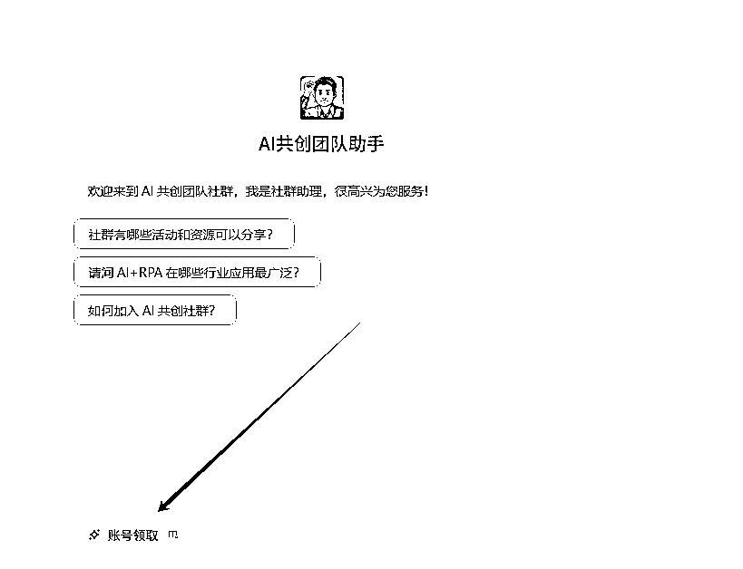
注意了，用户名其实相当于用户凭证，后续一些插件搭建需要同时用上级邀请码和自己的用户名才能使用，大家要保管好。
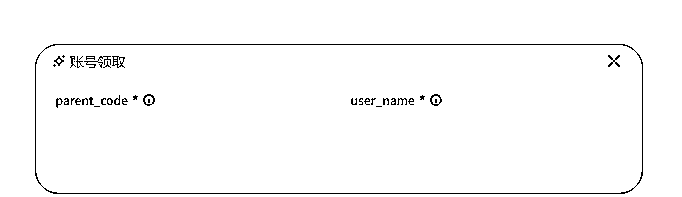
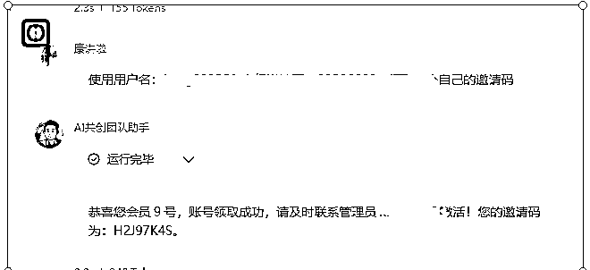
领取之后，记得发给我激活哦！（无上级邀请码的用88886666）
所有不能正常录入飞书的情况，99%是权限配置和表格没对应的问题，请先排查配置情况。我已经增加了一篇飞书的详细配置教程，自行参照操作：
“很抱歉，同步失败。请检查网络连接是否正常，或者稍后再试。” 或者 运行中止 之类的。 只要脚本不是一运行就失败。而是转圈圈，转了很久才失败的话，基本是因为coze工作流的超时导致的。 但是，超时了，实际上飞书可以正常生成文章内容，大家检查飞书待发布表格是否有内容。有内容就忽略报错就好了。
还有类似的Cannot read properties of undefined (reading '标题') 。是因为读取的表格里没有内容。请先检查内容是否为空！或者待发布文章表格链接是否配置正确
账号配置里面有 领域和 类型， 只有当待发布的文章，领域跟类型跟账号配置的能对应上，才会发布。并且账号配置里的 账号名称 要跟公众号的名称一致才行。脚本靠名称识别是否发布。
找到 这个 JavaScript代码 块 把 里面的 \\ 改成 / 再试试。
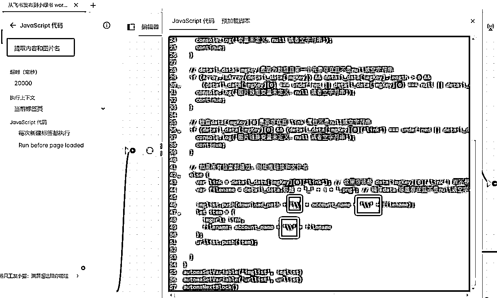
1、配图不够稳定，虽然现在的配图可以根据文中的大意进行配图。但也因为是实时生成的提示词。出图不是特别稳定。
而且固定使用的coze的通用模型，经常出现2d的。
2、coze的图片录入草稿不稳定，有时会出现系统繁忙或者插入图片失败的情况，导致无封面图，或者无法保存成功的情况。